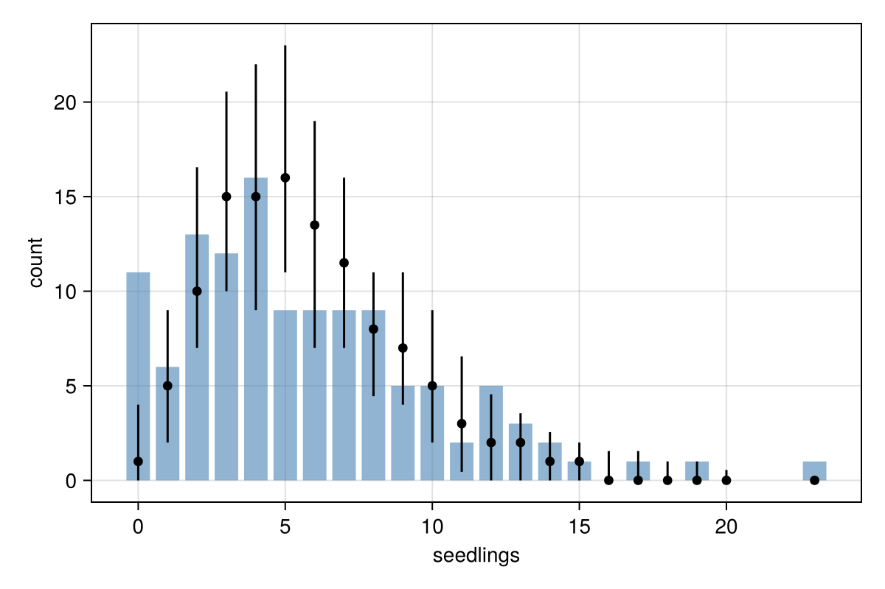
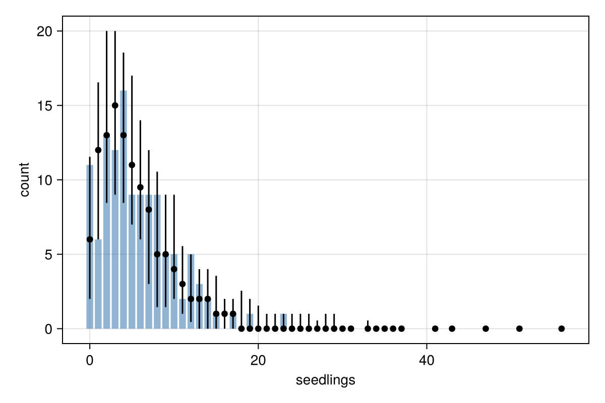

A first model
This tutorial fits a regression model to count data, checks it, finds a problem, and fixes it by changing the response distribution. Along the way it covers the steps of most analyses: writing a formula, fitting, reading the summary, checking the fit against the data, and comparing models.
You need PracticalBayesianRegression, DataFrames, Distributions (to simulate the data) and CairoMakie (for the plots):
using Pkg
Pkg.add(["PracticalBayesianRegression", "DataFrames", "Distributions", "CairoMakie"])Start Julia with several threads, for example julia -t 4, so that the four chains run in parallel.
The data
We simulate the number of seedlings counted in 120 plots, which depends on soil moisture. Simulated data has the advantage that we know the true values: an intercept of 1.5 and a slope of 0.4 on the log scale. The counts are more variable than a Poisson distribution allows (a negative binomial with shape 3), as real counts often are.
using PracticalBayesianRegression, DataFrames, Distributions, Random
rng = Xoshiro(2024)
n = 120
moisture = randn(rng, n)
mu = exp.(1.5 .+ 0.4 .* moisture)
seedlings = [rand(rng, NegativeBinomial(3, 3 / (3 + m))) for m in mu]
plots = DataFrame(; seedlings, moisture)
first(plots, 5)| Row | seedlings | moisture |
|---|---|---|
| Int64 | Float64 | |
| 1 | 2 | -0.283833 |
| 2 | 15 | 0.656008 |
| 3 | 0 | -1.02979 |
| 4 | 23 | 1.95784 |
| 5 | 2 | 0.132104 |
Priors
Every parameter gets a prior. Without your input the package uses the same default priors as brms, which depend on the data. List them before fitting with get_prior:
get_prior(@bf(seedlings ~ moisture), plots; family = poisson())prior class coef group resp dpar source
student_t(3, 1.6, 2.5) Intercept default
(flat) b moisture default
The slope b has a flat prior and the intercept a Student-t prior on the link (log) scale. Set priors shows how to change them.
Fitting
A Poisson regression of the counts on moisture:
fit_pois = brm(@bf(seedlings ~ moisture), plots; family = poisson(), seed = 1) Family poisson
Links mu = log
Formula seedlings ~ moisture
Data 120 observations
Draws 4 chains × 2000 iterations (warmup 1000, thin 1) → 4000 draws
Sampler nuts · 9 ms per chain
── Regression Coefficients ──────────────────────────────────────────────────────
╭───────────┬───────────────────────────────────────────────────────────────────╮
│ │ Estimate Est.Error l-95% CI u-95% CI Rhat Bulk_ESS Tail_ESS │
├───────────┼───────────────────────────────────────────────────────────────────┤
│ Intercept │ 1.58 0.04 1.49 1.67 1.00 1896 2068 │
│ moisture │ 0.36 0.04 0.29 0.44 1.00 2310 2269 │
╰───────────┴───────────────────────────────────────────────────────────────────╯
✓ Rhat ≤ 1.01 · ✓ ESS ≥ 400 · ✓ no divergences · ✓ treedepth < 10 · ✓ E-BFMI ≥ 0.3
@bf writes the formula in brms syntax, brm fits it. The fit ran four chains of 2000 iterations, the first 1000 of each being warm-up, and kept 4000 draws from the posterior.
The table has one row per regression coefficient. Estimate is the posterior mean and Est.Error the posterior standard deviation; the next two columns bound the central 95% credible interval. Rhat near 1.00 and large effective sample sizes (Bulk_ESS, Tail_ESS) show that the chains agree and the estimates are precise.
The draws of any parameter are available by name:
variables(fit_pois)3-element Vector{String}:
"b_Intercept"
"b_moisture"
"Intercept"slope = vec(draws(fit_pois, "b_moisture"))
mean(slope .> 0)1.0Every draw of the slope is positive. hypothesis gives the same answer in brms's format:
hypothesis(fit_pois, "moisture > 0")Hypothesis Tests:
╭──────────────────────────────────────────────────────────────────────────────╮
│ Hypothesis Estimate Est.Error CI.Lower CI.Upper Evid.Ratio Post.Prob │
├──────────────────────────────────────────────────────────────────────────────┤
│ moisture > 0 0.36 0.04 0.32 Inf Inf 1.00 │
╰──────────────────────────────────────────────────────────────────────────────╯
Note: 90% CI for one-sided and 95% for two-sided hypotheses.Checking the model
A posterior predictive check compares the data with data simulated from the fitted model. If the model describes the data well, the observed counts look like the simulated ones. Plots need a plotting package; here CairoMakie.
using CairoMakie
pp_check(fit_pois; type = :bars)
The bars are the observed number of plots with each count; the points and lines are the median and 90% interval of the same numbers in data simulated from the model. Eleven plots had no seedlings, but the model expects about two, and it gives almost no chance to the plot with more than 20 seedlings: the counts vary more than a Poisson distribution allows.
Changing the family
A negative binomial distribution adds a shape parameter for this extra variation:
fit_nb = brm(@bf(seedlings ~ moisture), plots; family = negbinomial(), seed = 1) Family negbinomial
Links mu = log; shape = log
Formula seedlings ~ moisture
Data 120 observations
Draws 4 chains × 2000 iterations (warmup 1000, thin 1) → 4000 draws
Sampler nuts · 62 ms per chain
── Regression Coefficients ──────────────────────────────────────────────────────
╭───────────┬───────────────────────────────────────────────────────────────────╮
│ │ Estimate Est.Error l-95% CI u-95% CI Rhat Bulk_ESS Tail_ESS │
├───────────┼───────────────────────────────────────────────────────────────────┤
│ Intercept │ 1.58 0.07 1.44 1.72 1.00 3476 2756 │
│ moisture │ 0.38 0.06 0.26 0.50 1.00 3244 2755 │
╰───────────┴───────────────────────────────────────────────────────────────────╯
── Further Distributional Parameters ────────────────────────────────────────
╭───────┬───────────────────────────────────────────────────────────────────╮
│ │ Estimate Est.Error l-95% CI u-95% CI Rhat Bulk_ESS Tail_ESS │
├───────┼───────────────────────────────────────────────────────────────────┤
│ shape │ 3.60 0.88 2.25 5.60 1.00 3620 2547 │
╰───────┴───────────────────────────────────────────────────────────────────╯
✓ Rhat ≤ 1.01 · ✓ ESS ≥ 400 · ✓ no divergences · ✓ treedepth < 10 · ✓ E-BFMI ≥ 0.3
The table now has a shape row under "Further Distributional Parameters". The estimates of the intercept and slope barely change, but their standard errors grow: the Poisson model was overconfident. The check looks better:
pp_check(fit_nb; type = :bars)
Comparing the models
Leave-one-out cross-validation estimates how well each model predicts observations it has not seen. loo approximates it from the existing draws:
loo(fit_nb)Computed from 120 observations (LOO)
Estimate SE
elpd_loo -316.23 7.76
p_loo 3.15 0.56
looic 632.46 15.52
All Pareto k estimates are good (k <= 0.5).elpd_loo is the expected log predictive density; higher is better. loo_compare ranks the models and gives the standard error of each difference:
loo_compare("negbinomial" => fit_nb, "poisson" => fit_pois)2-element Vector{@NamedTuple{name::String, elpd_diff::Float64, se_diff::Float64, elpd::Float64}}:
(name = "negbinomial", elpd_diff = 0.0, se_diff = 0.0, elpd = -316.22997959016334)
(name = "poisson", elpd_diff = -32.174151087683185, se_diff = 12.231674039983018, elpd = -348.4041306778465)The Poisson model's elpd_loo is lower by about 32, more than two and a half times the standard error of the difference, so the negative binomial model predicts new plots better. Its estimates are also close to the values used in the simulation: an intercept of 1.5, a slope of 0.4 and a shape of 3.
Next steps
- A multilevel model adds group-level effects.
- A distributional model lets the variance depend on predictors.
- Coming from brms lists the differences in syntax from R.